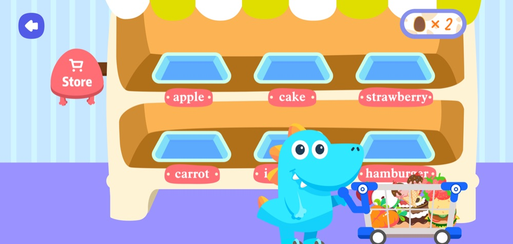
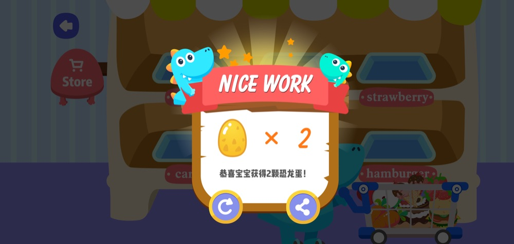

求真软件
首页
案例
联系我们
🌙
EN
首页
/
案例
/
粉笔网 · 游戏系列
粉笔网 · 游戏系列
Web 互动学习游戏 · 3 款
Web
负责
开发
历时
—
平台
Web
合作方
北京粉笔蓝天科技有限公司
为教育科技公司开发的互动学习游戏系列：以「超市」为主题的选购、结算、崩蛋等玩法，把背单词变成游戏。
界面预览


← BISS 挖矿神器
粉笔网 Kids 游戏 →
粉笔网 · 游戏系列 — Case Study
A series of interactive learning games for an ed-tech company — supermarket-themed shopping, checkout, and egg-breaking mechanics that turn vocabulary learning into play.